睿米医疗机器人运营管理系统
帮助手册
1 引言
1.1 编写目的
编写这份《帮助手册》的目的，是让用户了解和掌握睿米医疗机器人运营管理系统的功能和使用方法。
1.2 术语和缩写词
设备：指睿米医疗机器人，简称设备。 Mark：指睿米医疗机器人的耗材，简称Mark。 USB数据：指睿米医疗机器人导出的数据，通过USB口可以拷贝到U盘上，这个数据简称USB数据。 原地提醒：区别于传统的弹出窗口提醒，新的B/S架构应用往往直接在页面输入域的下方或者右侧对输入的信息进行提醒，这种方式简称原地提醒。1.3 客户端
睿米医疗机器人运营管理系统没有专用的客户端，使用常见的浏览器，输入系统的网址即可访问。
系统支持Firefox，Chrome浏览器，以及IE浏览器10以上版本，对于360安全浏览器，要使用默认的“极速模式”，不能使用“兼容模式”，见下图：

2. 代理商功能
2.1 注册，登录与密码找回
作为代理商登录，要在登录界面三个分页中，选择“代理商”，然后填写用户名和密码登录。
如果没有账号，则在代理商登陆页面，点击“我要注册”，显示注册界面
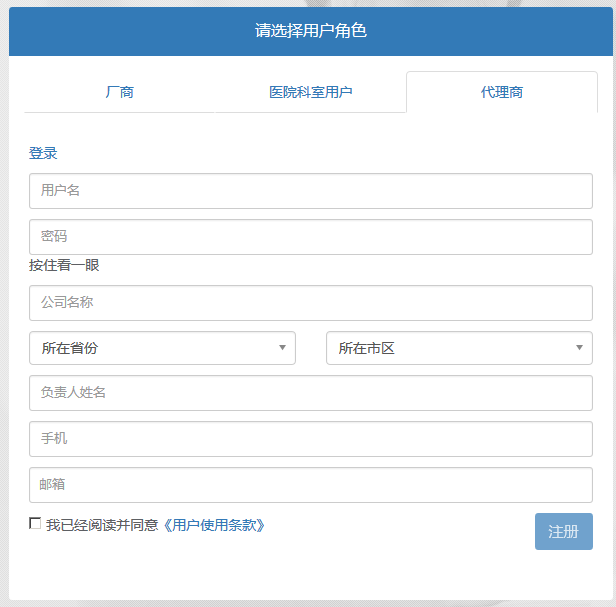图2.1-1 注册页面
注册代理商账号，所有信息都要填写，并且要勾选“我已经阅读并同意《用户使用条款》”。
注册的账号立即就能登录并使用所有功能，不过因为没有任何和其相关的Mark，所以所有的功能都不会返回任何信息。
如果忘记密码，在登录界面点击“忘记密码”，会弹出一个窗口让用户输入邮箱地址：
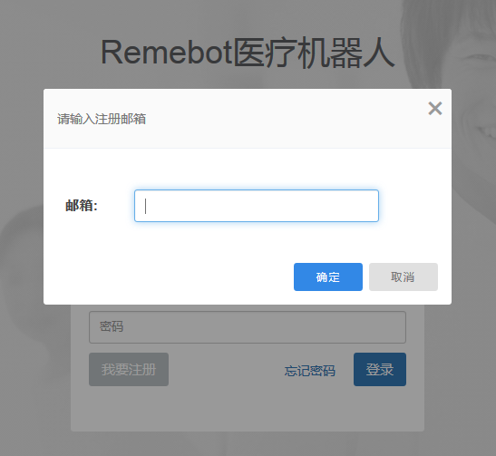图2.1-1 输入邮箱页面
输入邮箱地址并确定后，会给注册邮箱发送一封邮件，然后显示“邮件发送成功”，邮件中会包含一个修改密码的链接：
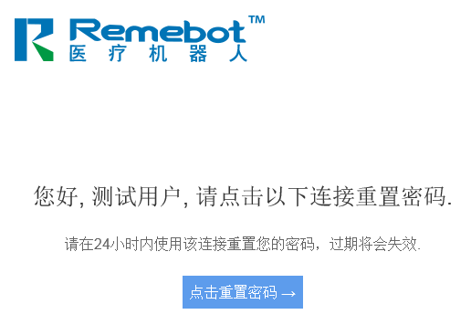图2.1-3 重置密码页面
点击后进入密码修改页面
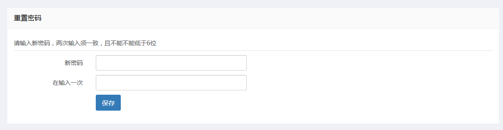图2.1-3 修改密码页面
输入两次新的密码，就可以修改密码成功。
2.2 代理商首页
代理商首页展示当前代理商租和售出的所有设备、已使用为扫码的Mark。
前一个提示主要是提醒即将租赁到期的设备，尽快去续租或采取其他处理。
第二个提示主要是提醒经过本代理商销售出去的Mark，被医生使用但是由于各种原因没有扫码，需要代理商线下去沟通，确认是谁用掉的，然后由代理商将相应的Mark指定到具体医生，以免影响归档。
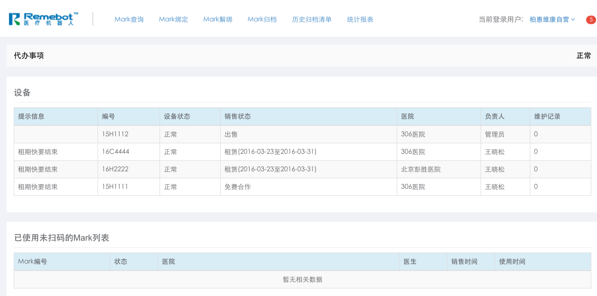图2.2-1 代理商首页界面
2.3 Mark查询
Mark查询支持对Mark的编号、Mark状态、销售状态、归档状态、医院、进货时间、销售时间、手术时间、损坏时间、归档时间进行查询。其中编号支持模糊查询。
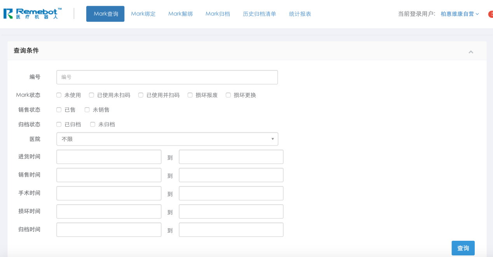图2.3-1 Mark查询界面
2.4 Mark绑定/解绑/归档
代理商的Mark绑定是直接将Mark与医院绑定，绑定是将Mark卖给医院后必须进行的操作，只有绑定到医院的Mark，医院的医生才能使用。
Mark绑定的条件和用户功能2.2.3 类似。Mark输入总数必须要等于Mark编号列表的行数，Mark的状态必须是未销售且已经绑定给当前代理商，而且未使用，医院必须选择，点击绑定后将显示绑定后的提示信息。
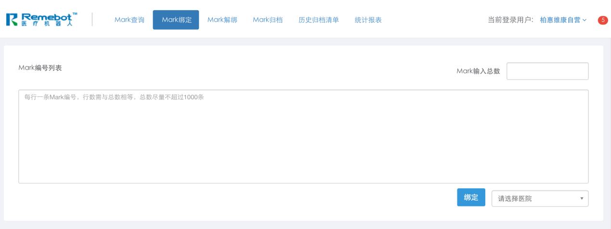图2.4-1 Mark绑定界面
代理商的Mark解绑是直接将Mark与医院的关系解绑，进行Mark解绑操作的原因可能是医院退货也可能是纠正错误操作。
Mark解绑的条件和用户功能2.2.4类似，Mark输入总数必须要等于Mark编号列表的行数，Mark必须是当前代理商经手，Mark的状态必须是已销售且未使用。点击解除绑定按钮后将显示解绑后的提示信息。
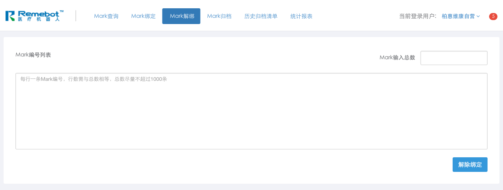图2.4-2 Mark解绑界面
归档操作是定期和医生确认使用量的一步操作。
首先选择一个时间，然后点击生成归档清单按钮，将会生成一个列表，列出所有这个时间点之前应该归档的Mark数量，和这些Mark应该归档为哪一位医生。点击确认归档按钮将完成归档操作，不可以单独归档某一个医生，要归档全归档。另外为了方便线下操作，这个页面最好打印出来，不过不打印也没关系，归档历史记录可供随时查询。
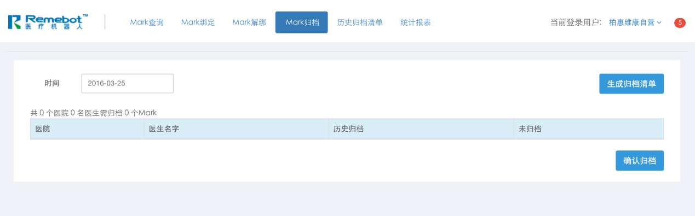图2.4-3 Mark归档界面
点击“归档历史信息”，可以看到精确到秒的历史每一次归档。
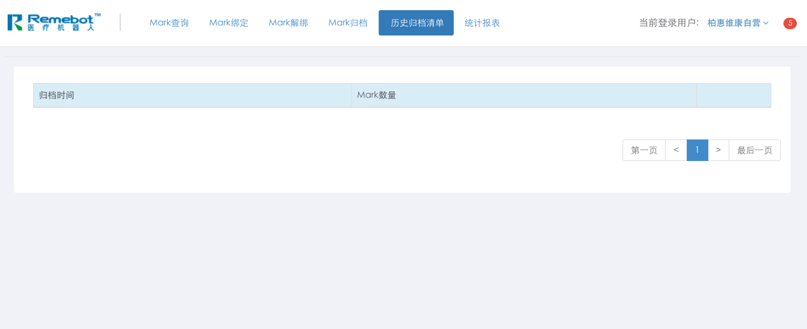图2.4-4 历史归档清单界面
点击“查看”，可以看到以医生为分类的归档详情，还可以看到这个医生历史归档的累计数量。
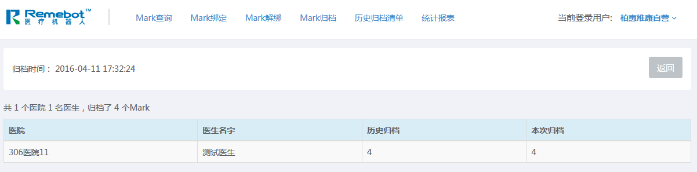图2.4-5 归档详情
2.5 个人设置与消息
个人设置界面包含修改密码和修改个人信息两个功能。当旧密码和新密码不为空，且旧密码正确，新密码与再输一遍相同时，才能进行密码修改的操作。
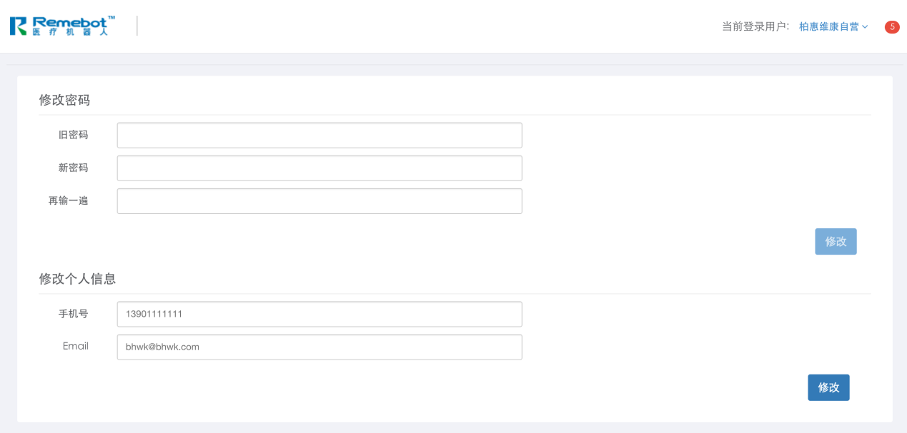图2.5-1 个人设置界面
1）站内信首页
上面的那个红色标志的5表示有5封站内信未读。站内信件模块包含对接收的消息和发送的消息进行查询，同时支持发送站内信的功能、查看信件的详情。
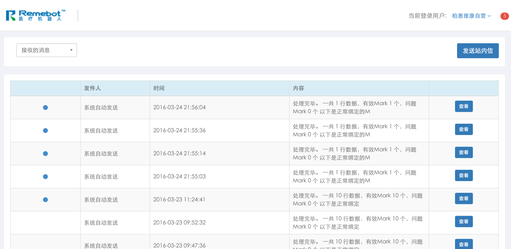图2.5-2 站内信首页界面
2）发送站内信界面
代理商只能给管理员发送站内信。点击发送按钮将成功发送站内信，并返回到站内信首页。
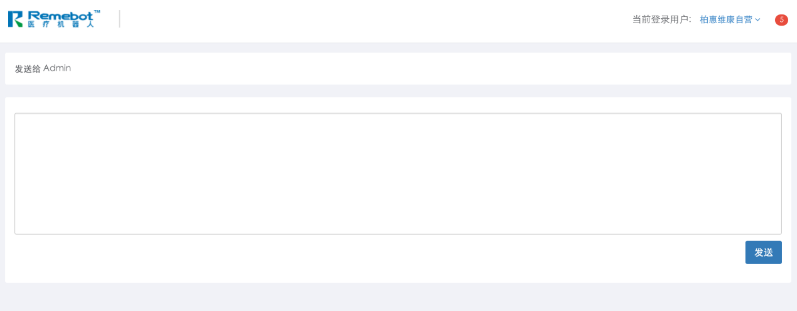图2.5-3 发送站内信界面
3）站内信详情界面
在站内信首页界面点击查看按钮进入站内信详情页面。点击返回按钮返回到站内信首页。
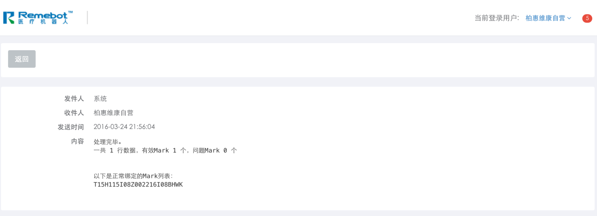图2.5-4站内信详情界面